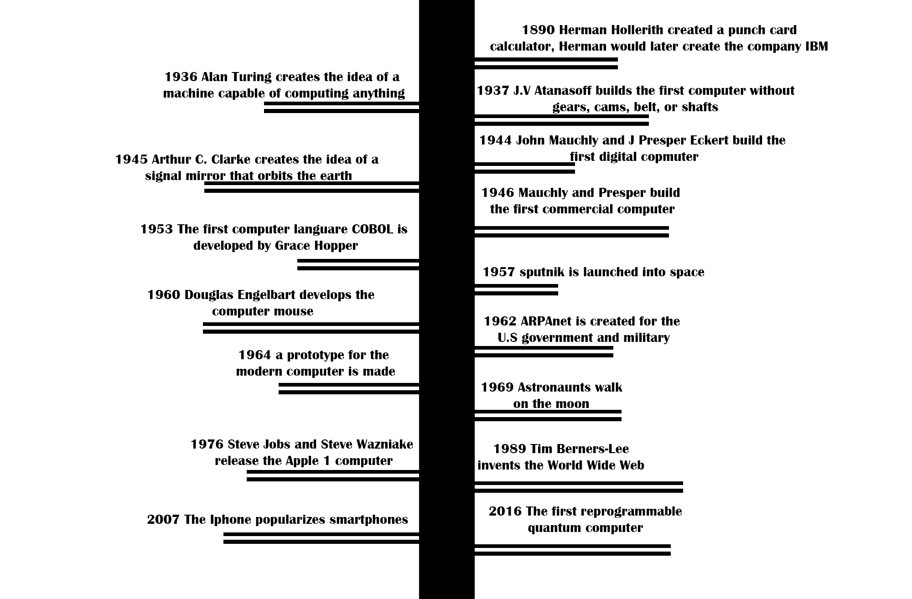

There was an idea that turned into one of the largest operations in the world-the Internet. This concept made the world sky rocket to an amazing place, where the options are limitless. Let's take a look at everything that goes on within the world of networks.
Since the beginning of humankind, people have been trying to find new ways to improve their lives. The tools people use are classified as technology. The biggest achievement of human innovation is arguably the Internet. Here is a timeline that shows the technology growth over more than a century.
